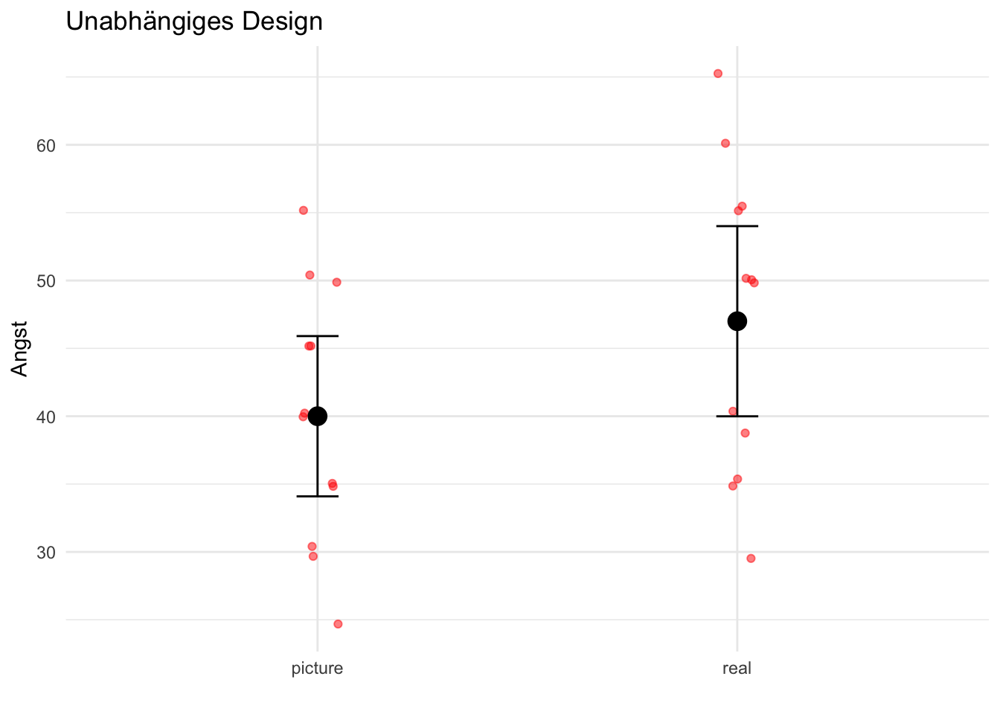
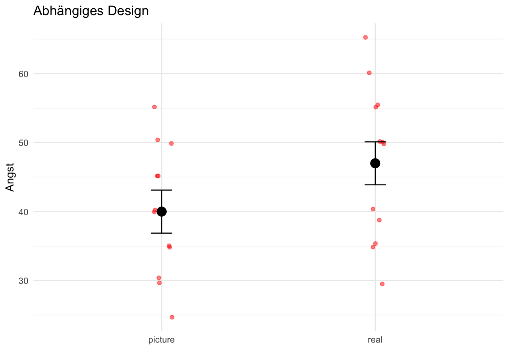
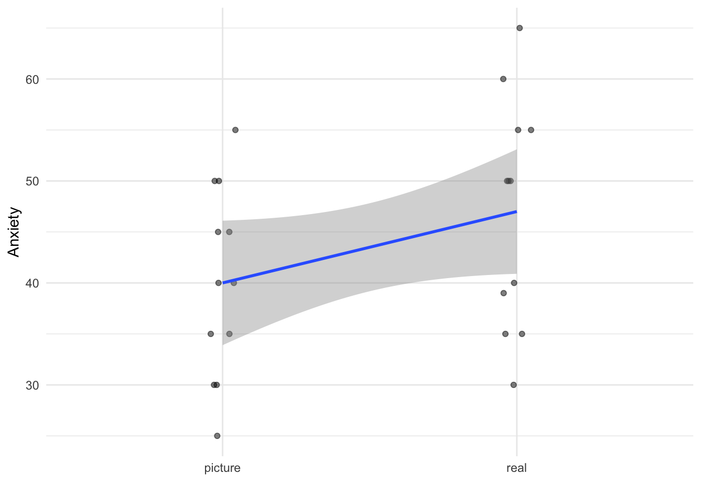

Neben der Betrachtung von Zusammenhängen zwischen Variablen (zum Beispiel mittels Korrelation oder Regression) möchten wir häufig wissen, ob sich zwei (oder mehr) Gruppen in ihren Mittelwerten unterscheiden. In korrelativen Studien (Beobachtungsstudien) erheben wir Daten, ohne etwas zu manipulieren. Experimentelle Studien (Interventionsstudien) manipulieren hingegen gezielt eine oder mehrere Variablen (z.B. eine Gruppe erhält ein Medikament und eine andere ein Placebo). Dadurch können wir Unterschiede im Ergebnis der Manipulation zuschreiben und kausale Schlussfolgerungen ziehen, was bei korrelativen Studien nicht möglich ist.
Innerhalb experimenteller Studien unterscheiden wir zwischen unabhängigen und abhängigen Designs. In einem unabhängigen Design bestehen die Gruppen aus unterschiedlichen Personen, sodass die Beobachtungen zwischen den Gruppen nicht zusammenhängen. In einem abhängigen Design (auch Messwiederholungs-Design genannt) nehmen dieselben Personen an mehreren Bedingungen teil, wodurch eine Abhängigkeit zwischen den Gruppen entsteht. Da jede Person als ihre eigene Kontrollbedingung dient, rechnen abhängige Designs automatisch individuelle Unterschiede heraus, die für die Behandlung irrelevant sind. Dadurch hat die Analyse mehr statistische Power als bei einem unabhängigen Design (d.h. kleinere Unterschiede können besser erkannt werden). Dieser Vorteil wird im folgenden Beispiel deutlich.
Beispiel
In einer fiktiven Studie wurde die Angst vor Spinnen auf einer Skala von 0 bis 100 gemessen (größere Werte stehen für höhere Angst). Es wurden 24 Personen in zwei Gruppen untersucht (also 12 Personen pro Gruppe). Einer Gruppe wurden Fotos von Spinnen gezeigt, der anderen Gruppe wurden echte Spinnen gezeigt.
Wir beginnen mit dem Importieren der Daten aus der Datei spider.dat:
Die mittleren Angstwerte für die beiden Gruppen betragen:
by(spider$Anxiety, spider$Group, mean)
spider$Group: picture
[1] 40
------------------------------------------------------------------------------------------
spider$Group: real
[1] 47
Im Durchschnitt ist die Angst also in der Gruppe, in der echte Spinnen präsentiert wurden, um 7 größer.
Unabhängige Stichproben
Die Daten in spider enthalten eine Person pro Zeile (ein Format, das sich gut für unabhängige Designs eignet). Die folgende Abbildung zeigt die Angstwerte für jede Person in beiden Gruppen (schwarze Punkte stellen die Gruppenmittelwerte dar, rote Punkte die individuellen Angstwerte, und die Fehlerbalken zeigen 95%-Konfidenzintervalle):

Man erkennt, dass die Konfidenzintervalle stark überlappen, d.h. der Unterschied zwischen den beiden Mittelwerten ist wahrscheinlich nicht signifikant.
Abhängige Stichproben
Stellen wir uns nun vor, dass insgesamt nur 12 Personen untersucht wurden, die aber jeweils in beiden Gruppen getestet wurden. Wir konvertieren also die Daten am besten ins Wide-Format, indem wir für jede Person zwei Spalten mit den Angstwerten erstellen (eine für jede Gruppe):
Anschließend berechnen wir angepasste Werte, welche die individuellen Unterschiede der Personen berücksichtigen. Dazu fügen wir zunächst eine Spalte mit der mittleren Angst jeder Person hinzu.
Nun berechnen wir die Differenz der Personenmittelwerte zum Gesamtmittelwert aller Datenpunkte – dies ist der Korrekturfaktor für Designs mit Messwiederholung.
Dadurch haben wir erreicht, dass die korrigierten Werte nun für alle Personen denselben Mittelwert ergeben, d.h. personenspezifische Unterschiede werden herausgerechnet und nur der Unterschied zwischen den Gruppen wird untersucht:
Die angepassten Werte können wir wieder in einer Grafik darstellen:

Aus der Grafik ist ersichtlich, dass die Gruppenmittelwerte (schwarze Punkte) gleich wie im unabhängigen Design sind. Auch die Rohdaten (rote Punkte) haben sich nicht geändert. Die Konfidenzintervalle sind jedoch aufgrund des abhängigen Designs wesentlich kleiner geworden. In diesem Beispiel überlappen sie jetzt nicht mehr, was auf einen signifikanten Unterschied zwischen den Gruppenmittelwerten schließen lässt.
Der t-Test
Nach der grafischen Darstellung von Gruppenunterschieden wenden wir uns jetzt der statistischen Analyse zu. Man verwendet den t-Test, um die Mittelwerte zweier Gruppen miteinander zu vergleichen. Hier gibt es zwei Varianten, nämlich einen t-Test für abhängige Gruppen und einen für unabhängige Gruppen. Ersteren nennt man auch gepaarten oder abhängigent-Test, letzteren nennt man unabhängigent-Test.
Die t-Statistik ist wie viele Statistiken aufgebaut. Sie setzt die Varianz, die vom Modell erklärt werden kann, in Beziehung zur Varianz, die nicht vom Modell erklärt werden kann (oder anders formuliert, Effekt geteilt durch Fehler). Im Falle des t-Tests ist das Modell der Unterschied der beiden Mittelwerte minus der erwarteten Differenz, und der Fehler wird durch den Standardfehler der Mittelwertsdifferenz geschätzt:
\[t = \frac{\text{Beobachtete Differenz} - \text{Erwartete Differenz}}{\text{Standardfehler der Differenz}}\]
Die beobachtete Differenz bezieht sich auf die beobachtete Differenz zwischen den Mittelwerten. Die erwartete Differenz (unter der Annahme der Nullhypothese) ist in den meisten Fällen gleich Null (wir erwarten keine Gruppenunterschiede). Die Vorgehensweise beim Testen ist also wie folgt:
Zwei Stichproben werden erhoben und deren Mittelwerte berechnet.
Wenn beide Stichproben aus derselben Population stammen, sollten die Mittelwerte ungefähr gleich sein. Dies ist die Annahme der Nullhypothese (es gibt keinen Unterschied). Große Differenzen können in seltenen Fällen aber zufällig auftreten.
Wir vergleichen den beobachteten Unterschied mit dem erwarteten Unterschied, und wir verwenden den Standardfehler als Maß für die Variabilität der Stichprobenmittelwerte.
Wenn der beobachtete Unterschied größer als der erwartete ist, kann das zwei Gründe haben:
Es gibt keinen Unterschied und der beobachtete Unterschied ist zufällig aufgetreten, d.h. zumindest eine Stichprobe ist nicht repräsentativ für die Population.
Die beiden Stichproben kommen aus unterschiedlichen Populationen, d.h. beide Stichproben sind repräsentativ für ihre Population. Das bedeutet, dass es also tatsächlich einen Unterschied gibt!
Je größer der Unterschied bzw. die t-Statistik, desto mehr spricht für den zweiten Fall (d.h. für einen tatsächlichen Effekt).
Der t-Test als lineares Modell
Wir haben den t-Test bereits bei der linearen Regression kennengelernt. Hier wird er verwendet, um zu überprüfen, ob Regressionskoeffizienten signifikant unterschiedlich von 0 sind. Wie wir außerdem soeben erfahren haben, wird der t-Test auch angewendet, um Mittelwerte zu vergleichen. Tatsächlich ist es so, dass man Gruppenmittelwerte als lineares Modell anschreiben kann:
\[y_i = \hat{y}_i + \varepsilon_i\]
Die abhängige Variable \(y\) ist die Variable, deren Gruppenmittelwerte man vergleichen möchte (z.B. Angst vor Spinnen). Die unabhängige Variable \(x\) codiert die Gruppen. Man verwendet dann für \(\hat{y}\) das lineare Modell:
\[\hat{y}_i = b_0 + b_1 \cdot x_i\]
Am besten illustriert man die Funktionsweise mit einem Beispiel. Dazu verwenden wir wieder die Daten über die Angst vor Spinnen. Erstellen wir nun ein lineares Regressionsmodell, welches Anxiety durch Group vorhersagt:
model =lm(Anxiety ~ Group, data=spider)summary(model)
Call:
lm(formula = Anxiety ~ Group, data = spider)
Residuals:
Min 1Q Median 3Q Max
-17.0 -8.5 1.5 8.0 18.0
Coefficients:
Estimate Std. Error t value Pr(>|t|)
(Intercept) 40.000 2.944 13.587 3.53e-12 ***
Groupreal 7.000 4.163 1.681 0.107
---
Signif. codes: 0 '***' 0.001 '**' 0.01 '*' 0.05 '.' 0.1 ' ' 1
Residual standard error: 10.2 on 22 degrees of freedom
Multiple R-squared: 0.1139, Adjusted R-squared: 0.07359
F-statistic: 2.827 on 1 and 22 DF, p-value: 0.1068
Hinweis
Hier ist anzumerken, dass die kategorische Variable Group von R automatisch mit 0 und 1 codiert wird (und zwar alphabetisch, d.h. die Stufe picture entspricht 0 und die Stufe real entspricht 1). Man spricht hier von Dummy-Coding.
Wenn man sich nun die Regressionskoeffizienten ansieht, erkennt man, dass der Intercept \(b_0 = 40\) dem Mittelwert der Gruppe 0 (picture) entspricht. Die Steigung \(b_1 = 7\) entspricht dem Unterschied der Mittelwerte zwischen den beiden Gruppen (\(47 - 40 = 7\)). Der t-Test für diesen Koeffizienten testet, ob die Steigung signifikant von Null verschieden ist. Er testet somit also auch automatisch, ob der Unterschied zwischen den Mittelwerten signifikant von Null verschieden ist. Man sieht, dass dieser Test mit \(p=0.107\)nicht signifikant ist, d.h. man kann daraus schließen, dass sich die Mittelwerte nicht signifikant voneinander unterscheiden. Dieses Ergebnis bestätigt also die Erkenntnis aus unserer grafischen Darstellung (stark überlappende Konfidenzintervalle).
Grafisch kann man die Situation wie folgt darstellen:

Die Regressionsgerade verbindet beide Gruppenmittelwerte und die Steigung beträgt 7; diese ist statistisch nicht signifikant von Null verschieden.
Wir können dies durch Einsetzen der Gruppenmittelwerte in die Gleichung des linearen Modells selbst nachrechnen. Wir beginnen mit der Gruppe 0, also picture. Wir wissen, dass der Mittelwert dieser Gruppe gleich 40 ist.
mean(spider$Anxiety[spider$Group=="picture"])
[1] 40
Wir setzen in die Modellgleichung ein: \[\hat{y}_i = b_0 + b_1 \cdot x_i\] Für \(\hat{y}_i\) verwenden wir den Gruppenmittelwert der picture-Gruppe, und das zugehörige \(x_i\) ist also \(x_{\text{Picture}}\) (codiert mit 0). \[\bar{y}_{\text{picture}} = b_0 + b_1 \cdot x_{\text{picture}}\]\[40 = b_0 + b_1 \cdot 0\]\[b_0 = 40\]
Man sieht also, dass der Intercept \(b_0\) dem Gruppenmittelwert der ersten Gruppe (mit Codierung 0) entspricht.
Setzen wir jetzt die Werte für die Gruppe real ein. Hier beträgt der Gruppenmittelwert 47:
Die Steigung der Geraden \(b_1\) entspricht also tatsächlich genau dem Unterschied der beiden Mittelwerte.
Annahmen
Da der t-Test auf einer lineare Regression basiert, setzt er auch dieselben Annahmen wie diese voraus:
Die Residuen sind normalverteilt (beim abhängigen t-Test sind die Residuen der Differenzen gemeint).
Die Daten sind intervallskaliert.
Beim unabhängigen t-Test müssen die Daten in den Gruppen voneinander unabhängig sein.
Beim unabhängigen t-Test muss Varianzhomogenität gegeben sein. Praktisch ist diese Voraussetzung aber nicht notwendig, da standardmäßig ein verbessertes Verfahren angewendet wird, welches Verletzungen dieser Annahme automatisch korrigiert (Welch t-Test).
Unabhängiger t-Test in R
Die t-Statistik berechnet sich also durch das Verhältnis erklärter Varianz zu nicht erklärter Varianz. In der Ausgabe von summary(model) (wobei model das mit lm() gerechnete lineare Regressionsmodell ist) kann man diese Größen in den Spalten Estimate bzw. Std. Error ablesen. Beim unabhängigen t-Test vergleicht man so die Mittelwerte beider Bedingungen:
In R kann man t-Tests mit der Funktion lm() durchführen. Alternativ gibt es aber auch die Funktion t.test(), welche im Hintergrund ebenfalls lm() verwendet, aber eine vertrautere Darstellung der Ergebnisse bietet:
(model =t.test(Anxiety ~ Group, data=spider))
Welch Two Sample t-test
data: Anxiety by Group
t = -1.6813, df = 21.385, p-value = 0.1072
alternative hypothesis: true difference in means between group picture and group real is not equal to 0
95 percent confidence interval:
-15.648641 1.648641
sample estimates:
mean in group picture mean in group real
40 47
Das erste Argument ist also eine Formel, deren linke Seite die Datenpunkte angibt (die Spalte Anxiety in diesem Beispiel). Die rechte Seite der Formel gibt die Gruppierungsspalte an (also hier Group). Damit man die Spaltennamen direkt verwenden kann, spezifiziert man noch data=spider, damit klar ist, dass diese Spalten im Data Frame spider zu finden sind.
Ausgegeben wird der Wert der t-Statistik, die Freiheitsgrade (standardmäßig korrigiert nach Welch, was die Voraussetzung der Varianzhomogenität überflüssig macht), sowie der p-Wert. Weiters gibt es noch das 95%-Konfidenzintervall für die t-Statistik sowie die Gruppenmittelwerte.
Die zweite Möglichkeit, die Funktion aufzurufen, verwendet zwei Argumente; hier übergibt man also die Daten der beiden Gruppen in zwei separaten Vektoren:
(model =t.test(spider_w$picture, spider_w$real))
Welch Two Sample t-test
data: spider_w$picture and spider_w$real
t = -1.6813, df = 21.385, p-value = 0.1072
alternative hypothesis: true difference in means is not equal to 0
95 percent confidence interval:
-15.648641 1.648641
sample estimates:
mean of x mean of y
40 47
Das Ergebnis ist aber natürlich dasselbe.
Die Effektgröße kann man aus dem Wert von \(t\) in eine Korrelation \(r\) umrechnen:
\[r = \sqrt{\frac{t^2}{t^2 + \text{df}}}\]
Im Beispiel ist die Effektgröße \(r\) also:
t = model$statistic[[1]]df = model$parameter[[1]]r =sqrt(t^2/ (t^2+ df))round(r, 3)
[1] 0.342
Abhängiger t-Test in R
Der abhängige (oder gepaarte) t-Test funktioniert ähnlich, verwendet aber die Mittelwerte der einzelnen Differenzen anstelle der Differenz der Mittelwerte, um die individuellen Unterschiede herauszurechnen:
\[t = \frac{\bar{D} - \mu_D}{s_D / \sqrt{N}}\]
Unter der Nullhypothese ist \(\mu_D = 0\): \[t = \frac{\bar{D}}{s_D / \sqrt{N}}\]
Für den abhängigen t-Test verwendet man wieder die Funktion t.test() und setzt das Argument paired=TRUE. Hier sollte man die Variante mit zwei Argumenten verwenden (d.h. die Daten sollten im Wide-Format vorliegen):
Paired t-test
data: spider_w$picture and spider_w$real
t = -2.4725, df = 11, p-value = 0.03098
alternative hypothesis: true mean difference is not equal to 0
95 percent confidence interval:
-13.2312185 -0.7687815
sample estimates:
mean difference
-7
Das Ergebnis ist diesmal signifikant mit \(p=0.03098\). Dies entspricht unseren Überlegungen mit den unterschiedlich großen Konfidenzintervallen von abhängigen und unabhängigen Versuchsdesigns. Abhängige Designs können also kleinere Unterschiede detektieren.
Die Effektgröße kann man wieder aus \(t\) mit der Formel oben in \(r\) umwandeln:
t = model$statistic[[1]]df = model$parameter[[1]]r =sqrt(t^2/ (t^2+ df))round(r, 3)
[1] 0.598
Es handelt sich also in diesem Fall um einen großen Effekt.
Ausblick
Zusammenfassend haben wir gesehen, dass der Mittelwertsvergleich über den t-Test auf ein lineares Modell zurückgeführt werden kann. Möchte man mehr als zwei Mittelwerte vergleichen, kann man das lineare Modell mit mehreren Prädiktoren verwenden (Dummy-Coding). In der klassischen Varianzanalyse betrachtet man die F-Statistik, welche aber auch Teil der linearen Regression ist (sie misst die Güte des Modells) und dementsprechend auch in der Ausgabe aufscheint. Man kann also auch eine ANOVA als Spezialfall eines linearen Modells sehen. Um die vertrauten ANOVA-Tabellen dennoch auch in R zu erhalten, kann man beispielsweise das Paket afex benutzen.
Bei abhängigen Messungen kann man keine linearen Modelle rechnen, da eine der wichtigsten Voraussetzungen die Unabhängigkeit der Messpunkte ist. Sogenannte lineare gemischte Modelle (engl. linear mixed models) können aber mit diesen Abhängigkeiten umgehen und werden immer häufiger statt den klassischen Messwiederholungs-ANOVAs eingesetzt. Gemischte Modelle sind Verallgemeinerungen von linearen Modellen, oder umgekehrt sind lineare Modelle Spezialfälle von linearen gemischten Modellen. Das Paket lme4 hat sich in R als Standard zur Berechnung dieser Modelle durchgesetzt (bzw. die darauf aufbauenden Pakete lmerTest und afex).
Übungen
Übung 1
Das Paket dplyr beinhaltet den Datensatz starwars (aktivieren Sie das Paket um auf diesen Datensatz zugreifen zu können). Verwenden Sie diese Daten um herauszufinden, ob die weiblichen Charaktere signifikant kleiner sind als die männlichen (Spalte height). Verwenden Sie die Spalte gender um zwischen den Geschlechtern "feminine" und "masculine" zu unterscheiden. Verwenden Sie für Ihre Analyse ein Signifikanzniveau von 5% und geben Sie die Mittelwerte beider Gruppen an.
Führen Sie auch einen Vergleich des Gewichtes (Spalte mass) durch (überprüfen Sie die Hypothese, dass männliche Charaktere mehr wiegen als weibliche). Geben Sie auch hier die Mittelwerte beider Gruppen an.
Hinweis
Verwenden Sie das Argument alternative von t.test(), um einen einseitigen Test durchzuführen.
Übung 2
Vergleichen Sie im penguins-Datensatz (aus dem Paket palmerpenguins), ob sich die Merkmale bill_length_mm bzw. bill_depth_mm zwischen den Spezies unterscheiden (führen Sie paarweise Vergleiche für jedes Merkmal durch). Berichten Sie die relevanten Statistiken, Signifikanzen und Effektgrößen (Korrelationskoeffizient r) für jeden t-Test.
Die Funktion pairwise.t.test() rechnet mehrere paarweise Vergleiche. Verwenden Sie diese Funktion (zusätzlich zu den einzeln gerechneten t-Tests von zuvor), um die Vergleiche durchzuführen. Mit dem Argument p.adjust.method können Sie außerdem die p-Werte korrigieren, weil mehrere Tests die Wahrscheinlichkeit eines falsch positiven Ergebnisses (der t-Test sagt “es gibt einen Unterschied” obwohl tatsächlich kein Unterschied besteht) erhöhen.
Übung 3
Laden Sie den Datensatz sleep (standardmäßig bei R dabei). Unterscheiden sich die beiden Gruppen (group) in der Anzahl an zusätzlichen Schlafstunden (extra)? Wenn ja, wie groß ist dieser Unterschied im Mittel? Geben Sie auch ein 95%-Konfidenzintervall an.
Hinweis
Entnehmen Sie dem Hilfetext, ob Sie einen abhängigen oder unabhängigen t-Test rechnen müssen.